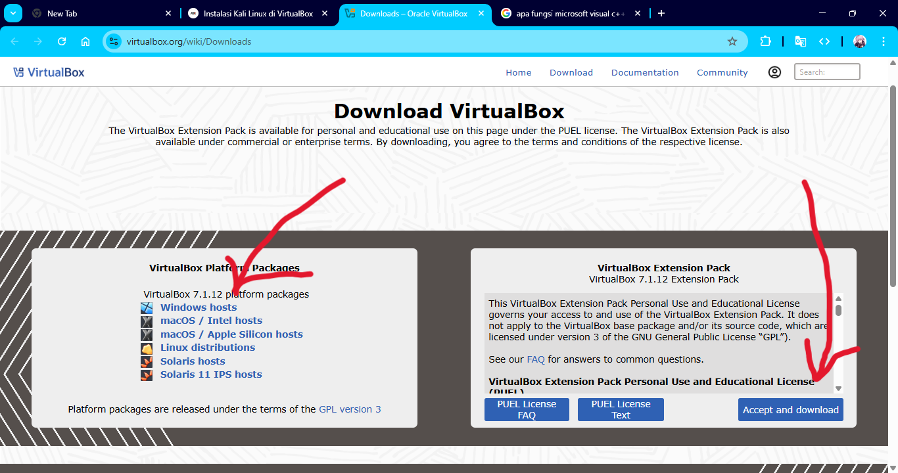
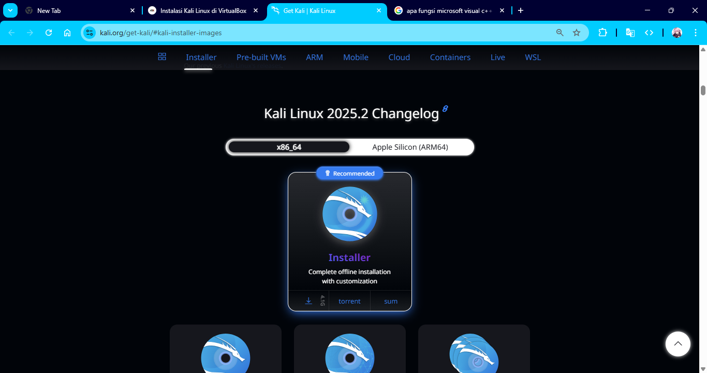
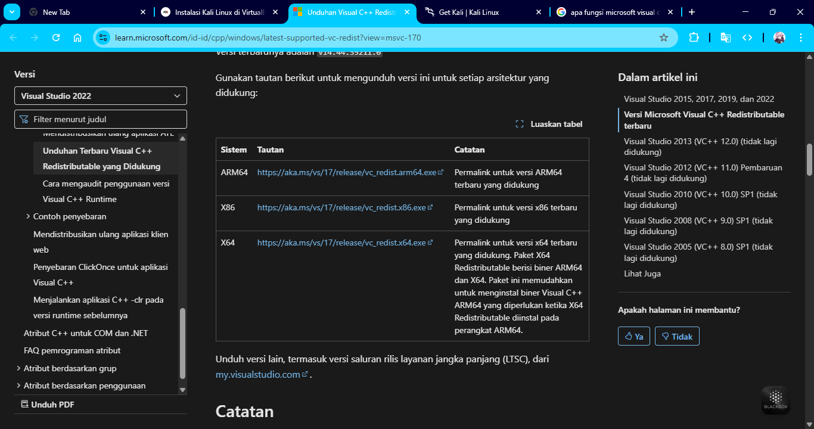
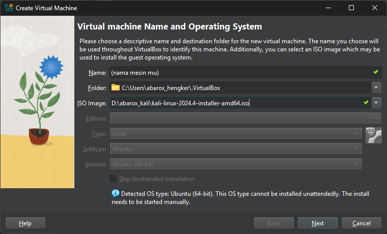
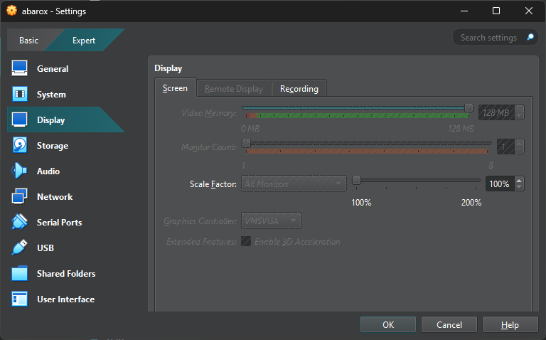
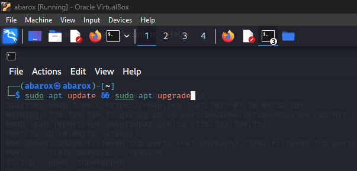

Instalasi Kali Linux di VirtualBox
Artikel ini memberikan panduan lengkap untuk menginstal Kali Linux di dalam VirtualBox. Ini cocok untuk kamu yang ingin belajar ethical hacking di lingkungan aman tanpa mengganggu sistem utama.
Langkah 1: Unduh Semua File yang Dibutuhkan
Pastikan kamu mengunduh semua file berikut sebelum memulai instalasi:
Pastikan kamu memilih versi yang sesuai dengan sistem operasi dan arsitektur (Windows/macOS/Linux - x86/x64/ARM64).



Langkah 2: Instalasi Software
Lakukan instalasi dengan urutan sebagai berikut:
- Install Microsoft Visual C++ Redistributable.
- Install VirtualBox dari file
.exe. Setelah itu buka virtualboxnya. - Tambahkan Extension Pack melalui menu File > Tools > Extension Pack Manager.
Langkah 3: Buat Mesin Virtual di VirtualBox
Buka VirtualBox dan klik tombol New. Isi data berikut:
- Name:nama mesin mu
- Type: Linux
- Version: Ubuntu (64-bit)

Langkah 4: Atur Resource RAM dan Hard Disk
- RAM(Base Memory): Minimum 2048MB (2GB), disarankan 4GB atau lebih
- Hard Disk: Minimal 25 GB disarankan 50 GB
Langkah 5: Atur Tampilan
Pilih Mesin Virtual mu, Masuk ke Settings mesin virtual, lalu:
- Display → ubah Video Memory menjadi 128 MB

Langkah 6: Jalankan Instalasi Kali Linux
Mulai mesin virtual dengan klik Start. Pada layar awal pilih Graphical Install, lalu ikuti langkah-langkah berikut:
- Pilih bahasa, lokasi, dan layout keyboard (saya sarankan ikuti pilihan default)
- Masukkan hostname dan domain (biarkan default jika tidak yakin)
- Buat username dan password
- Partisi disk → pilih opsi Guided - use entire disk
- Ikuti pilihan defaultdari kali linux
Tunggu proses instalasi hingga selesai. Proses ini bisa memakan waktu 30–60 menit tergantung spesifikasi PC.
.png)
.png)
.png)
.png)
.png)
.png)
.png)
.png)
.png)
.png)
.png)
.png)
.png)
.png)
.png)
.png)
.png)
Langkah 7: Login dan Konfigurasi Awal
Setelah reboot, login menggunakan akun yang telah dibuat. Kamu sekarang berada di desktop Kali Linux. Disarankan untuk:
- Jalankan
sudo apt update && sudo apt upgrade - Pastikan koneksi internet berfungsi
- Install Guest Additions (untuk dukungan layar penuh, clipboard, dan drag-drop)
.png)
.png)

🎉 Selamat! Kali Linux sudah siap digunakan. Kini kamu bisa mulai belajar ethical hacking secara aman dan nyaman di mesin virtual.